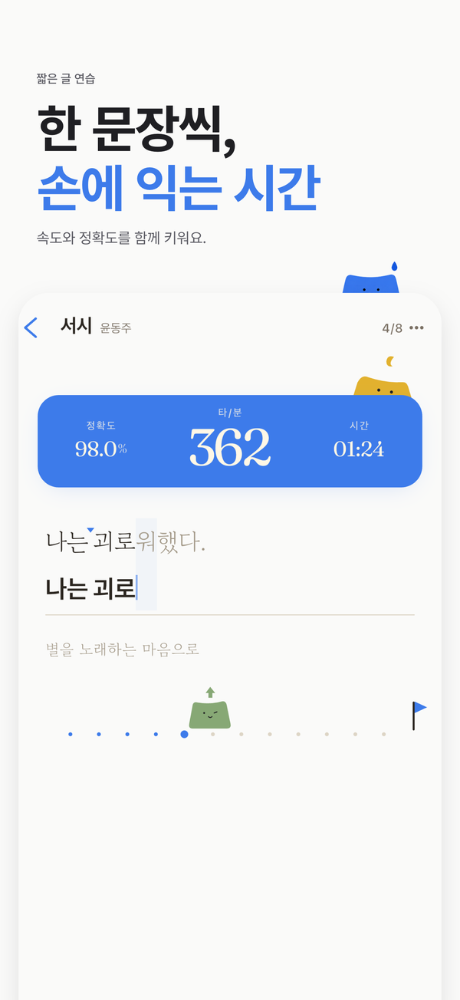
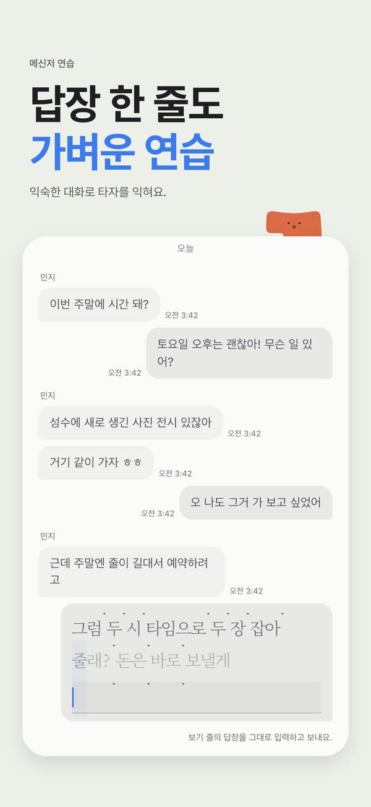
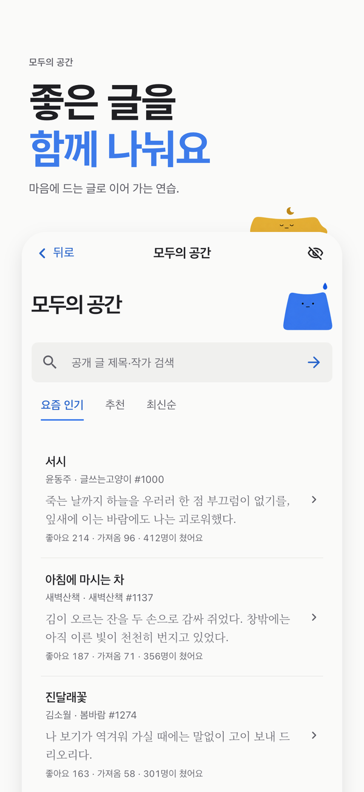
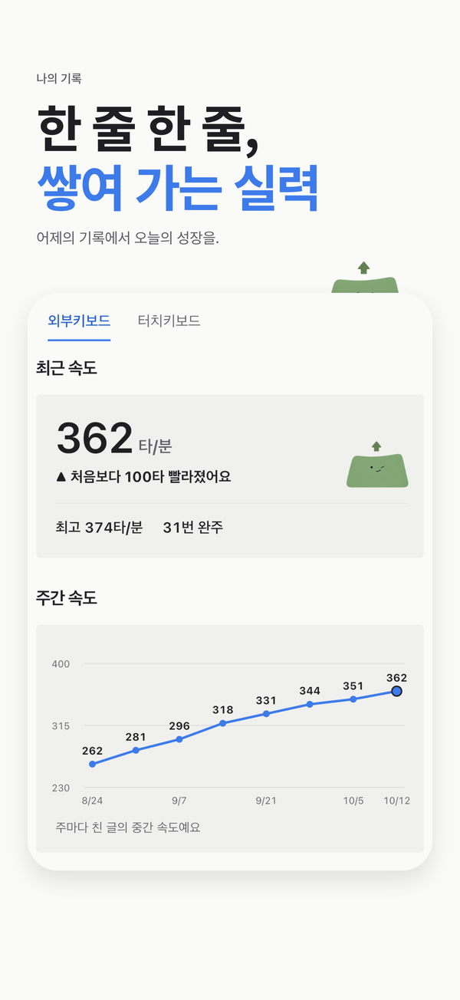
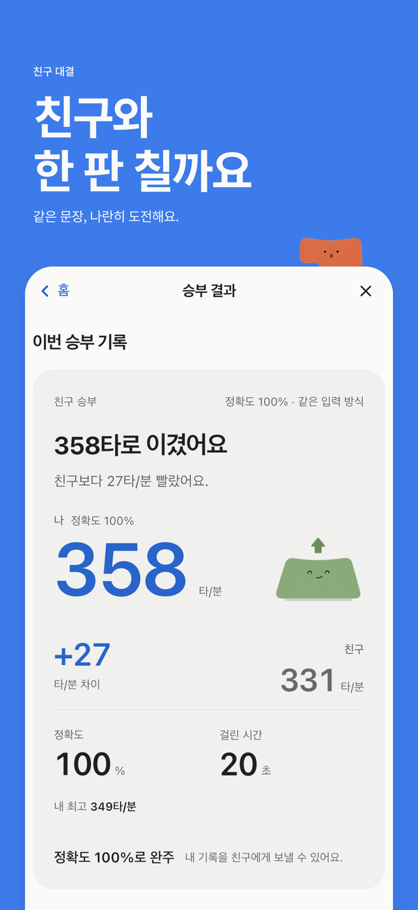
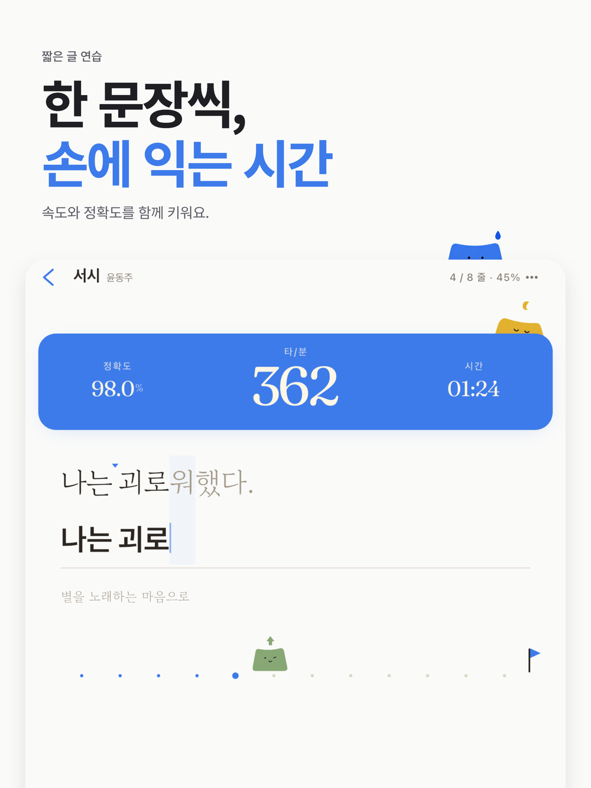

TADAK · 한글·영문 타자연습
타닥타닥한 문장씩,
손에 익는 시간.
처음엔 천천히, 어느새 자연스럽게.
한글과 영어, 손끝으로 익히는 나만의 타자연습.
휴대폰에서도, 아이패드 키보드에서도.
무료 다운로드 · iPhone / iPad / Android 어떤 연습이 있나요? ↓


01 / FIND YOUR RHYTHM
오늘은 어떤 글을
쳐볼까요?
마음에 남는 시 한 편도, 친구에게 보내는 답장도.
읽고 싶은 글이, 연습하고 싶은 글이 됩니다.

짧은 글, 깊이 있는 필사
한 문장으로 가볍게 시작하고, 시 10편과 소설 발췌 연재로 고전 필사를 이어가세요.

일상처럼, 실전처럼
메신저 답장부터 이메일까지. 속담·사전·위키·성경 모드로 다양한 문장을 손에 익히세요.

좋은 글을 함께 나눠요
모두의 공간에서 인기 글과 추천 글을 만나보세요. 검색으로 취향에 맞는 글을 찾아 연습할 수 있어요.
기본부터 차근차근 하고 싶다면?
한글·영문 자리 연습과 단어 연습으로 시작하세요. 키 위치와 손가락 가이드를 익힌 뒤, 짧은 글로 넘어가면 돼요.
02 / SEE YOUR PROGRESS
어제보다 나아진 손끝.
기록으로 보여요.
빨라진 속도도, 줄어든 오타도 놓치지 않게.
나의 기록에서 연습의 흐름을 확인하세요.
-
타자 속도 측정과 정확도 변화
연습 결과와 변화 그래프로 지금의 실력과 성장 과정을 살펴보세요.
-
자주 틀리는 글자, 나만의 약점 분석
오타와 약점을 확인하고, 약점에 맞춘 AI 연습 글로 한 번 더 연습하세요.
-
나의 입력 방식에 맞는 주간 순위
터치 키보드와 외부 키보드는 따로. 같은 입력 방식의 기록과 비교하세요.

실제 앱 화면의 기록 예시예요.
03 / BETTER TOGETHER
친구와 한 판
칠까요?
같은 문장, 나란히 도전해요.
혼자 하던 연습에 작은 승부욕을 더해보세요.
- 친구랑 붙기에서 도전 링크 만들기
- 친구에게 링크 공유하기
- 같은 글을 치고 기록 겨루기
친구에게 앱이 없어도 괜찮아요. 설치 후 도전이 이어져요.
타닥에서 친구랑 붙기
04 / YOUR KEYBOARD, YOUR PACE
아이패드를 열면,
나만의 연습실.
외부 키보드를 연결하고 편안하게 타닥타닥.
키보드 타자 연습도, 터치로 치는 짧은 연습도
쓰던 기기에서 그대로 시작하세요.
-
외부·블루투스 키보드 지원
자리 연습의 손가락 가이드로 기본부터 익혀요. iPad 외부 키보드에서는 Enter로 메신저 답장도 보낼 수 있어요.

A SMALL TASTE OF TADAK
지금, 한 문장만
쳐볼까요?
앱을 만나기 전, 웹에서 가볍게.
휴대폰 키보드로도 입력할 수 있어요.
웹 체험의 속도는 글자 수(CPM) 기준입니다.
입력란을 눌러 시작하세요. 틀린 글자는 밑줄로 표시됩니다.
한 문장 연습 완료!
0 CPM
0% 정확도
앱에서 더 많은 글을 만나보세요.
타닥타닥은 무료 타자연습 앱인가요?
네. 타닥타닥은 App Store와 Google Play에서 무료로 다운로드할 수 있습니다. 저작권이 만료된 공개 저작물로 고전 필사도 무료로 연습할 수 있습니다.
아이패드에서 외부 키보드로 타자연습을 할 수 있나요?
네. iPad와 iPhone, Android에서 터치 키보드와 외부·블루투스 키보드를 지원합니다. 키보드 자리 연습에는 손가락 가이드가 제공되며, 터치 키보드와 외부 키보드의 주간 순위는 따로 집계합니다.
한글 타자연습과 영타 연습을 모두 지원하나요?
네. 한글과 영어로 자리 연습, 단어 연습을 할 수 있습니다. 기본 키 위치부터 익히고 문장 연습으로 이어가세요.
어떤 글로 타자연습을 할 수 있나요?
짧은 글과 고전 필사, 메신저·이메일·속담·사전·위키·성경 실전 모드를 지원합니다. 고전 필사는 시 10편과 소설 발췌 연재로 구성됩니다. 모두의 공간에서는 인기 글을 검색하고 연습할 수 있고, AI 글쓰기로 연습할 글을 만들 수도 있습니다.
타자 속도 측정과 정확도 기록은 어디서 보나요?
연습 결과에서 타수와 정확도, 걸린 시간을 확인할 수 있습니다. 나의 기록에서는 속도·정확도 변화와 자주 틀리는 글자, 약점 분석을 살펴보고 약점에 맞춘 AI 연습 글로 이어갈 수 있습니다.
친구와 타자 대결은 어떻게 하나요?
친구랑 붙기에서 도전 링크를 만들어 공유하세요. 친구가 링크로 참여하면 같은 글로 기록을 겨룰 수 있습니다. 친구가 앱을 먼저 설치해야 하는 경우에도 설치 후 도전을 이어갈 수 있습니다.
다크 모드와 글자 크기 조절이 되나요?
네. 다크 모드와 글자 크기 설정을 지원합니다. 사용하는 기기와 읽기 편한 환경에 맞춰 연습 화면을 조절해보세요.
앱 문의나 계정 삭제는 어디서 하나요?
문의는 지원 페이지 또는 omilsoft@gmail.com으로 보내주세요. 계정 삭제 방법과 개인정보 처리에 대한 안내는 하단의 계정 삭제 및 개인정보처리방침 페이지에서 확인할 수 있습니다.
ONE SENTENCE AT A TIME.
오늘의 한 문장,
같이 시작해요.
타닥타닥 · 한글·영문 타자연습 · 무료 다운로드